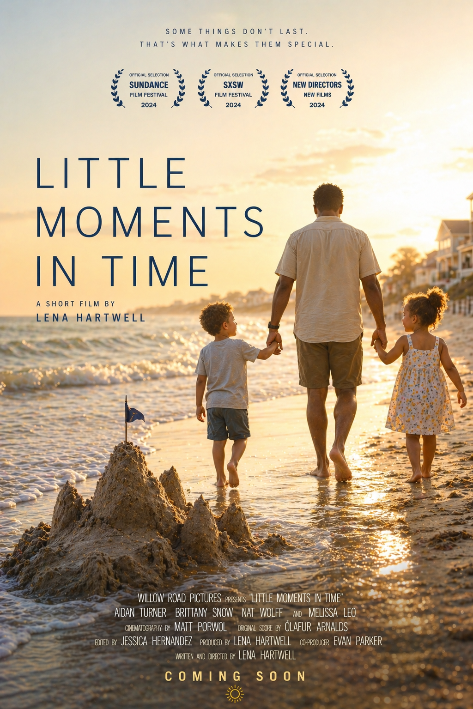
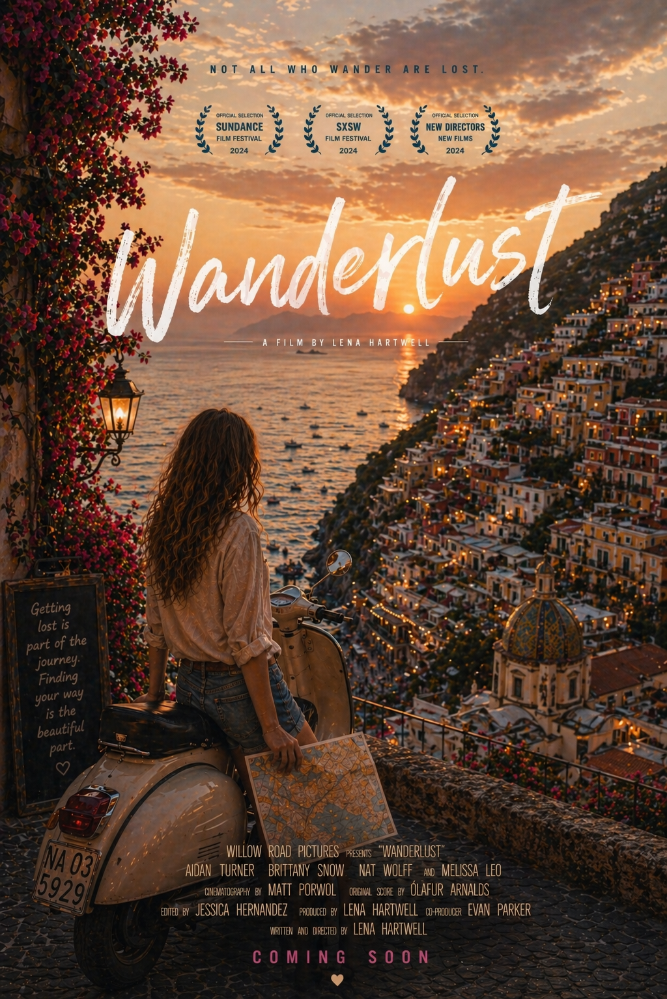

Film Screenings
Showcasing independent films from emerging creators.
Short Film of the Week - Little Moments in Time
A short film that captures the essence of life's best fleeting moments in time.

Feature Film of the Week - Wanderlust
An independent film that explores themes of wanderlust and self-discovery.

Feature Film of the Month - The Nature of Us
An independent film that takes viewers on a journey through nature and the human spirit.